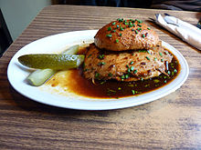
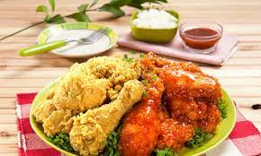
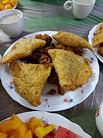

Hamburger
Food Item- 01
Price- 900Tk
The "Hamburger Rundstück" was popular already in 1869 and is believed to be a precursor to the modern Hamburger.
Chicken Fri
Food Item- 02
Price- 600Tk
Fried chicken, also known as Southern fried chicken, is a dish consisting of chicken pieces that have been coated with seasoned flour or batter and pan-fried, deep fried, pressure fried, or air fried. The breading adds a crisp coating or crust to the exterior of the chicken while retaining juices in the meat.
French Fri
.jpg)
Food Item- 03
Price- 800Tk
French fries are served hot, either soft or crispy, and are generally eaten as part of lunch or dinner or by themselves as a snack, and they commonly appear on the menus of diners, fast food restaurants, pubs, and bars.
Pizza
.jpg)
Food Item- 04
Price- 1200Tk
Pizza is sold fresh or frozen, and whole or in portion-size slices. Methods have been developed to overcome challenges such as preventing the sauce from combining with the dough, and producing a crust that can be frozen and reheated without becoming rigid. There are frozen pizzas with raw ingredients and self-rising crusts.
Samoosa
Food Item- 05
Price- 500Tk
Singaras may be eaten as a tea-time snack. They can also be prepared in a sweet form. Bengali singaras tend to be triangular, filled with potato, peas, onions, diced almonds, or other vegetables.
sweets
.jpg)
Food Item- 06
Price- 1000Tk
This is a list of Bengali sweets and desserts. Most of these sweet dishes are unique to Bangladesh but some of them originally came from other parts of the Subcontinent and re-made as a new Bangladeshi versions of them. To know more check out: Bangladeshi cuisine, Bengali cuisine, Mughlai cuisine and South Asian cuisine.